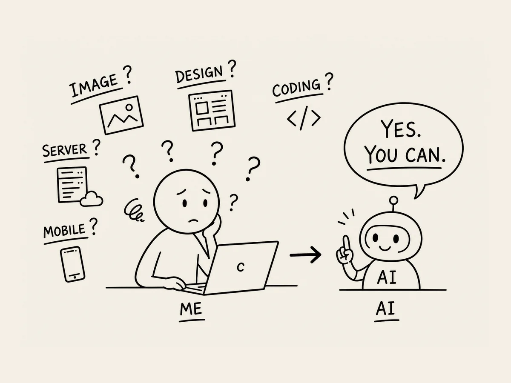

2.
No sé nada. ¿No pasa nada?
Sabía que crear un sitio web era difícil.
Y parecía que había bastantes cosas que hacer.
Comprar un dominio.
Crear las imágenes.
Programar.
Configurar un servidor.
Hacer que funcionara tanto en PC como en móvil.
Conectarlo todo al servidor.
...
Ni siquiera podía imaginarme haciendo todo eso yo solo.
Nunca había estudiado diseño.
De programación sabía todavía menos.
Ni siquiera sabía dónde se suponía que estaba un servidor.
«No sé nada de esto.
Y estoy solo.
¿Aun así puedo hacerlo?»
La IA respondió:
«Sí. Puede hacerlo usted solo.»
Me quedé mirando la pantalla un momento.
«Mmm... ¿de verdad puedo?»
No me lo creía.
«Espera.
Tenía entendido que hay un montón de cosas que hacer.
Imágenes, programación, conectar el servidor, comprar un dominio...
¿Me estás diciendo que puedes ayudarme con todo eso?»
«Sí.»
«Entonces, ¿qué tengo que hacer yo?»
«Solo tiene que decidir qué tipo de sitio web quiere crear, Capitán.»
Seguía teniendo mis dudas.
Y así empezó la creación de mi primer sitio web.
